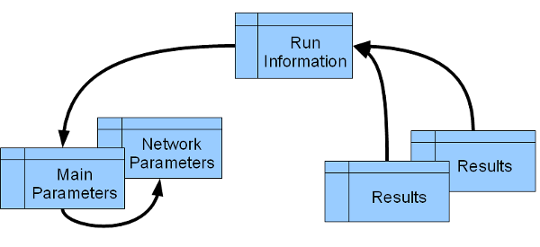

last update: 29.06.2011
ParMa - Documentation
Purpose
ParMa provides several ways to define and read parameter settings for ABM ant therefore
facilitates the organisation of model parameter settings.
Advantages
- The Parameter Framework allows the definition of several sources of parameters.
- Checking, if a parameter has been set by calling the setParameter-method
- Parameters may be defined in
- MySQL database
- XML-Files
- Java-Code
- The Java code allows the definition of default values that are used in case there is no further definition.
A Note on Parameter Management
In simulation it is important to associate simulation results with the correct set of parameters that were applied
to produce these results. A practical way to achieve such a bounding is as follows:
- Store your parameters in a Database and assign a unique id to each parameter set.
- Store your results in a database and assign a unique runID to each simulation run.
- Define a database table that maps runIDs to parameter set IDs. It is also recommended to store additional
information about the model implementation used (e.g. the revision number).

Of course, there are tools to support such an approach:
- This ParameterManager support reading parameter sets from a database using a specific parameter set id.
- The RsDbOutputter enables outputting results to a database and optionally automatically creates rows in
a table that map runIDs to parameter set IDs (run information table).